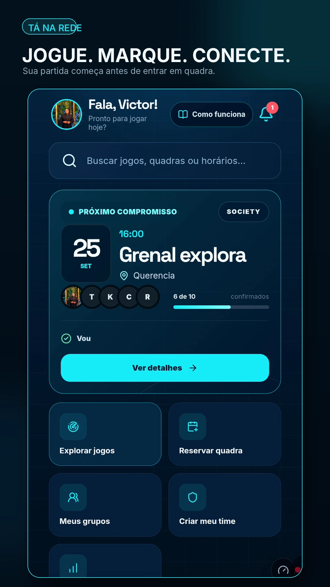
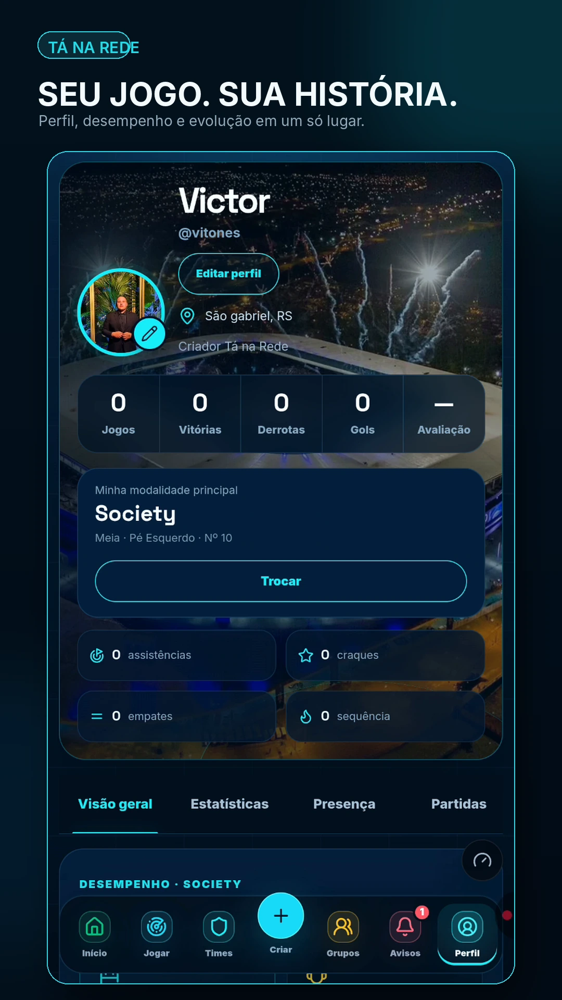

“um site que não pareça igual a todos.”
institucional, landing page, portfólio ou uma página feita para apresentar uma ideia direito.
Oi. Eu sou o Victor.
Site, sistema, automação, correção de bug… se dá para resolver com código, provavelmente eu vou querer mexer.
quem está por trás disso
Sou militar, desenvolvedor web e estudo Análise e Desenvolvimento de Sistemas. Entrei na tecnologia há cerca de um ano e foi fazendo projeto de verdade que a coisa começou a fazer sentido pra mim.
Trabalho principalmente com Python e Django. Crio sites e sistemas, faço automações, corrijo bugs e também gosto de pegar projeto que já existe, abrir tudo e descobrir por que aquilo não está funcionando do jeito que deveria.
Inteligência artificial também faz parte do meu dia a dia. Eu estudo bastante como escrever prompts melhores e como usar IA para acelerar trabalho sem deixar a ferramenta pensar no meu lugar.
E como um assunto só nunca foi suficiente, também estudo cibersegurança e Internet das Coisas. Gosto dessa parte de entender o que acontece por trás da tela — seja num sistema web, numa automação ou em dispositivos conectados.
No fim, o que eu mais gosto é simples: você me traz uma ideia e eu tento fazer ela existir.
meu projeto mais importante até agora
começou com uma ideia.
depois vieram uns bons milhares de linhas de código.
Eu criei o Tá na Rede do zero para juntar em um lugar só quem quer jogar, organizar partida, montar time e encontrar onde jogar.
Hoje o projeto tem área de jogador, perfis esportivos, partidas, grupos, times, arenas, reservas, resultados, estatísticas, votação de craque e um monte de coisa que foi aparecendo conforme o produto foi ficando mais real.

feito com
Django PostgreSQL Nginx + Gunicorn VPS e muita revisão no celular.
O melhor desse projeto é que ele me obriga a pensar além da tela bonita: regra de negócio, banco, autenticação, deploy, performance, mobile, erro em produção e usuário fazendo exatamente o que eu não imaginava que ele faria.
abrir o Tá na Rede ↗o que você pode me mandar no WhatsApp
institucional, landing page, portfólio ou uma página feita para apresentar uma ideia direito.
eu ajudo a organizar fluxo, tela, regra, usuário, banco de dados e o que precisa acontecer por trás.
bug, comportamento estranho, layout torto, fluxo que parou de funcionar ou código que precisa de revisão.
aí provavelmente vale olhar para uma automação.
melhoria de interface, performance, experiência no celular e novas funcionalidades.
Em português de orçamento: sites, sistemas web, automações, manutenção e evolução de produto.
como eu gosto de trabalhar
Você não precisa chegar com tudo pronto. Me explica o que quer resolver, eu faço perguntas, a gente organiza e começa pelo que realmente importa.
fim da página, começo da conversa
Não precisa fazer briefing bonito. Texto, áudio, referência, rabisco — me mostra o que você está pensando e a gente começa por aí.